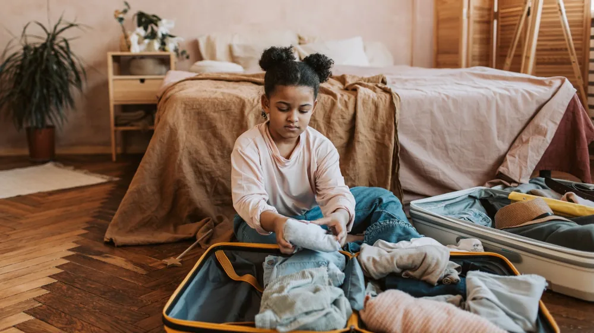
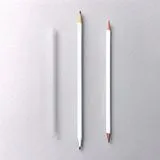

나홀로 여행 준비, 이 5가지 체크리스트만 챙기면 끝납니다
사진: Vlada Karpovich / Pexels (무료 이미지, 출처 표기)
혼자 떠나는 여행, 불안감을 설렘으로 바꾸는 준비법

혼자 여행을 떠나기로 결심했지만 막상 짐을 싸려니 무엇부터 챙겨야 할지 막막하신가요? 동행자가 있을 때와 달리, 모든 상황을 스스로 해결해야 하기에 꼼꼼한 사전 준비는 선택이 아닌 필수입니다. 여권 만료일 확인부터 비상시 대처 요령까지, 혼자서도 안전하고 여유롭게 여행을 즐길 수 있는 실용적인 체크리스트를 정리해 드립니다.
1단계: 행정 및 서류 준비 (출발 2주 전)
가장 먼저 확인해야 할 것은 신분증과 서류입니다. 외교부에 따르면 해외여행 시 여권 잔여 유효기간은 출발일 기준 최소 6개월 이상 남아있는 것이 안전합니다. 국가에 따라 무비자 입국이 가능한지, 혹은 사전에 전자비자(ETA)를 발급받아야 하는지 미리 확인해야 합니다.
국제운전면허증이 필요하다면 미리 경찰서나 운전면허시험장에서 발급받으세요. 여권 분실에 대비해 여권 사본과 여권용 사진 2장을 캐리어와 배낭에 각각 나누어 보관하는 것도 유용한 팁입니다.
2단계: 안전망 구축과 여행자 보험
혼자 하는 여행에서 가장 중요한 것은 안전입니다. 단기 여행이라도 여행자 보험은 반드시 가입하는 것을 권장합니다. 상해나 질병 치료비 보장 한도를 확인하고, 휴대품 도난 보상 범위도 꼼꼼히 살펴보세요.
외교부 영사콜센터(해외 +82-2-3210-0404) 번호를 스마트폰에 저장해 두고, 방문 국가의 한국 대사관 주소와 연락처를 메모장에 적어두는 것이 좋습니다. 가족이나 신뢰할 수 있는 지인에게 전체적인 여행 일정표와 숙소 정보를 공유해 두는 것도 잊지 마세요.
3단계: 결제 수단 다변화와 이중화
돈 문제는 현지에서 가장 곤란할 수 있는 부분입니다. 현금만 가지고 다니는 것은 분실 위험이 크고, 카드 한 장만 믿고 가기에는 가맹점 사정이나 카드 복제 등의 변수가 있습니다. 현지 통화 현금 일부와 체크카드, 신용카드를 골고루 분배하여 준비하세요.
최근에는 수수료 혜택이 좋은 트래블 체크카드(환전 수수료가 없거나 현지 ATM 인출 수수료를 면제해 주는 카드)가 다양하게 출시되어 있습니다. 비상용 신용카드는 결제망이 다른 두 종류(Visa, Mastercard)로 나누어 준비하면 결제가 거절되는 상황에 유연하게 대처할 수 있습니다.
4단계: 스마트폰 필수 앱 설치 및 데이터 해결
혼자 길을 찾고 소통하려면 스마트폰의 역할이 절대적입니다. 출발 전에 현지에서 주로 쓰이는 지도 앱(구글맵 등)과 번역 앱을 미리 설치하고, 오프라인 지도 데이터를 다운로드해 두면 인터넷이 끊긴 상황에서도 길을 잃지 않습니다. 우버나 그랩 같은 차량 공유 앱도 미리 결제 카드를 등록해 두는 것이 현지에서 당황하지 않는 방법입니다.
로밍, eSIM(유심 칩을 물리적으로 교체하지 않고 소프트웨어로 개통하는 전자 유심), 포켓 와이파이 중 본인의 여행 스타일에 맞는 데이터 이용 방식을 선택해 예약하세요. 혼자 여행할 때는 즉각적인 인터넷 연결이 안전과 직결되므로 현지 공항에 도착하자마자 데이터를 사용할 수 있도록 세팅해 두어야 합니다.
5단계: 짐 줄이기와 필수 아이템 체크리스트
혼자 여행할 때는 짐이 무거우면 이동할 때 체력 소모가 극심해집니다. 가방 무게를 최소화하면서도 꼭 필요한 물품들을 선별해 패킹해야 합니다. 아래의 표를 참고하여 빠진 물건이 없는지 점검해 보세요.
가방을 꾸릴 때는 무거운 물건을 아래쪽에 배치해야 피로감을 줄일 수 있습니다. 또한, 귀중품과 당장 필요한 물품은 언제나 몸에 밀착할 수 있는 미니 크로스백이나 슬링백에 따로 담아 휴대하는 것이 안전합니다. 차근차근 준비해서 안전하고 행복한 나홀로 여행을 완성해 보세요.
🔗 이 글도 함께 보면 좋아요: 직장인 다이어트 도시락 준비, 3단계 밀프렙 핵심 가이드
관련 추천 상품
이 포스팅은 쿠팡 파트너스 활동의 일환으로, 이에 따른 일정액의 수수료를 제공받습니다.
한눈에 보는 상품 목록

여행용 압축 파우치
도난방지 스프링 스트랩
해외용 멀티어댑터